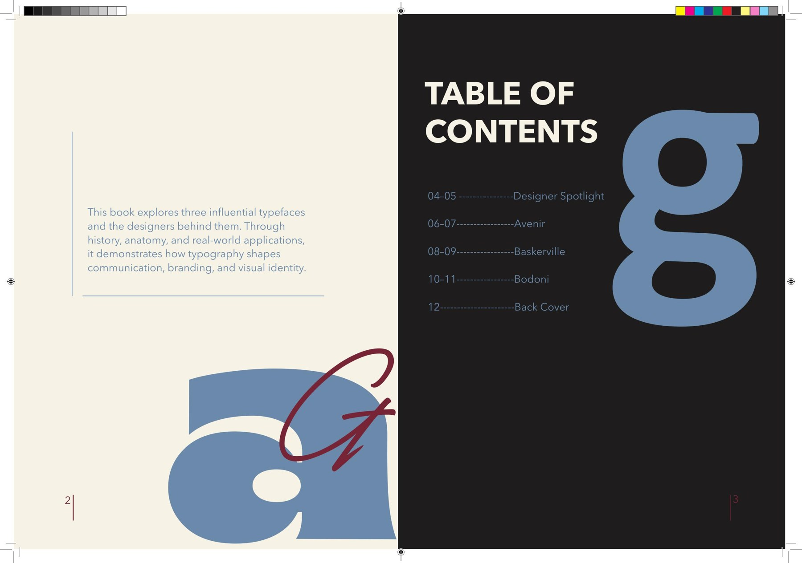
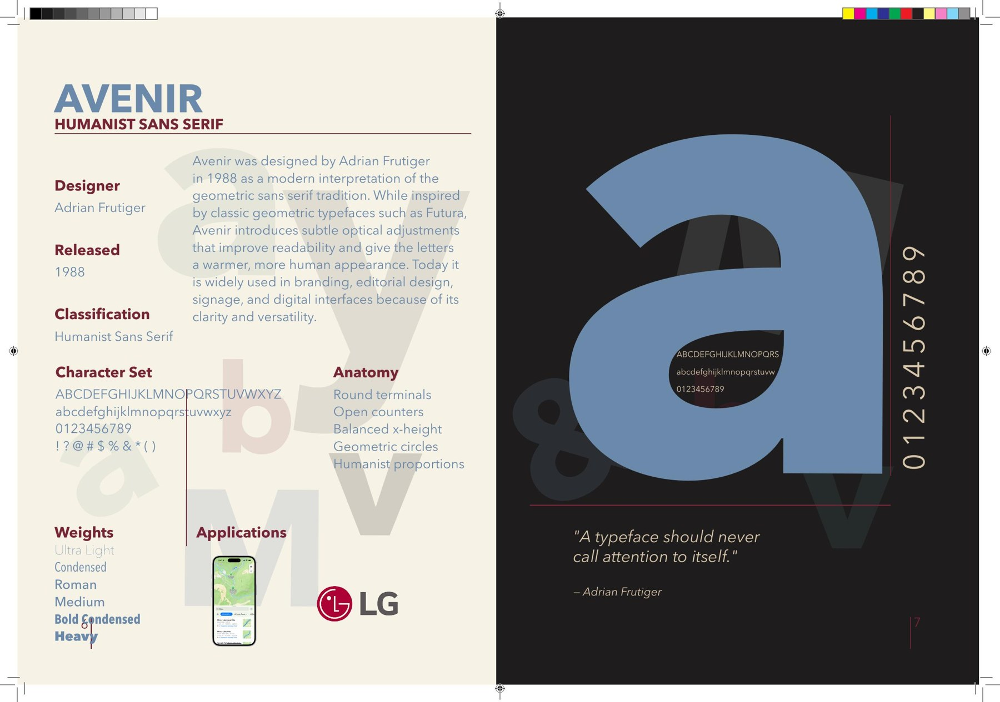
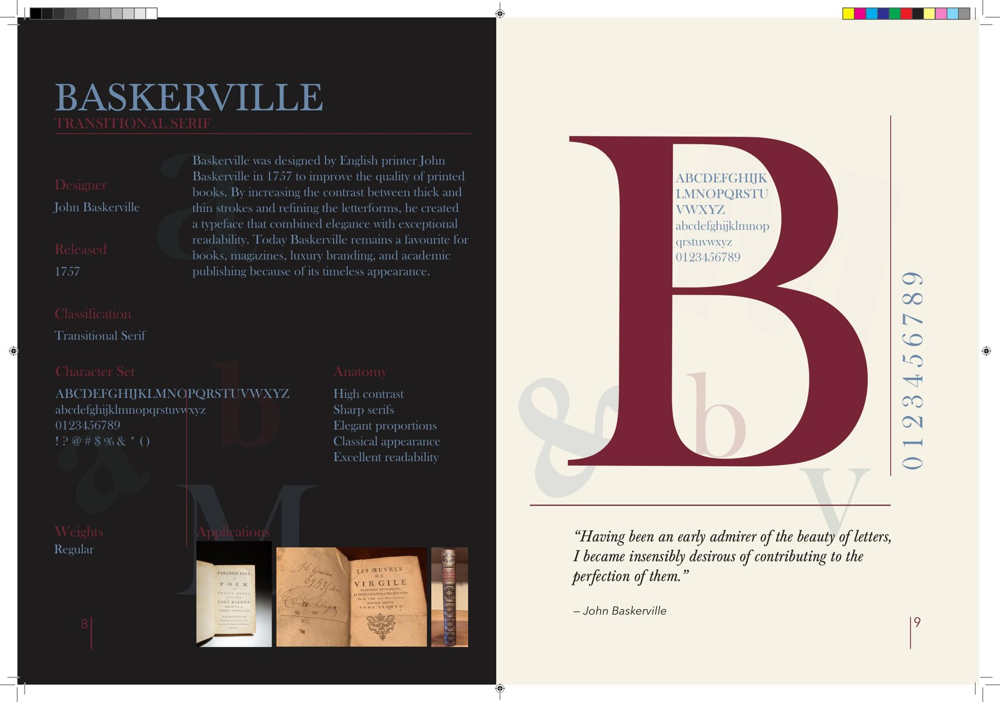
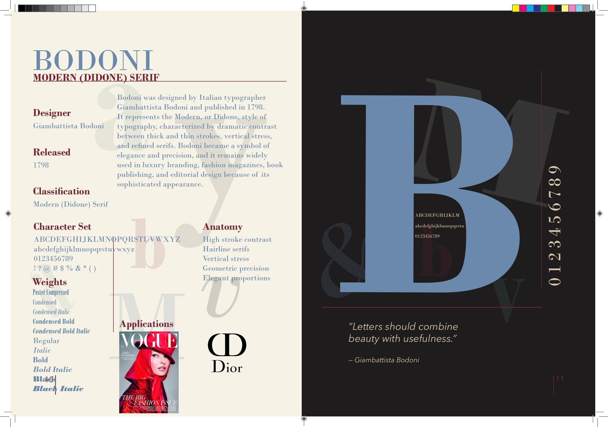

Typography Specimen Book
Exploring the anatomy, history and application of type.
Project Brief
This project was created as a professional typography specimen book exploring influential typefaces, their designers, history, anatomy and real-world applications.
The goal was to show how typography communicates meaning through structure, hierarchy and visual design while applying editorial layout principles across a cohesive publication.

Research & Visual Direction
Research formed the foundation of the project. For each typeface, I explored the designer, historical context, classification, anatomy, character set, weights and applications before developing the final spreads.
Visual Language
The editorial style combines minimal layouts with expressive typography. Oversized letterforms, strong hierarchy and balanced compositions create pages that are informative while still visually engaging.
Colour & Structure
Warm neutrals are contrasted with muted blue and burgundy accents. An editorial grid, consistent margins and paragraph styles maintain alignment and consistency throughout the publication.
Type Trials & Layout Development
Before finalizing the typefaces, I tested serif and sans-serif families for readability, personality and hierarchy. Different weights, sizes and spacing were compared to understand how each typeface behaved in editorial layouts.

Featured Typefaces
The final book focuses on three influential typefaces with very different personalities: Avenir, Baskerville and Bodoni.



Design Process
Cover Development
The cover evolved through several concepts before the final direction was chosen. Layered letterforms, expressive typography and a limited palette were refined to reflect the visual language used inside the book.
Editorial Consistency
Oversized background letterforms became a recurring design device. Combined with layered typography, colour and imagery, they helped create bold compositions while maintaining hierarchy and readability across the spreads.
Final Production
The completed specimen book brings together research, typography, layout and visual storytelling into a cohesive editorial publication. Each spread was designed to balance readability with visual impact while maintaining consistency through colour, hierarchy and spacing.
Outcome
This project strengthened my understanding of typography as a communication system rather than simply a font choice. It demonstrates research, type classification, editorial hierarchy, grid-based layout and publication design, while showing how three distinct typefaces can be presented within one consistent visual identity.